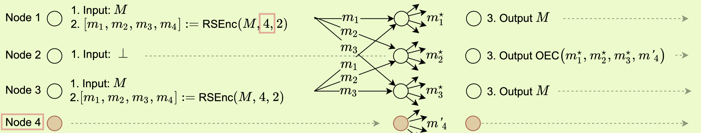

synchronous Data Dissemination and its Applications
10 minute read ∼ Filed in : A paper noteIntroduction
Problem
Asynchronous Data Dissemination (ADD) Problem:
- in an asynchronous network, n nodes with t nodes malicious.
- The goal is to disseminate a data blob from a subset of honest nodes to all honest nodes, despite the presence of some malicious nodes
- Formally, the goal is that a subset of at least t +1 honest nodes start with a common message blob M, and t hen all honest nodes output M at the end of the protocol.
Solution
The paper designs a simple and efficient ADD protocol that is
- information-theoretically secure: it does not rely on any cryptographic assumption
- tolerates up to 1/3 of malicious nodes. i.e., n >= 3t + 1
-
communication cost of O(n M + n^2) to disseminating a message M.
The protocol can be used to improve Asynchronous reliable broadcast (RBC), and then the improved RBC can improve the communication cost of
- Asynchronous atomic broadcast and Asynchronous distributed key generation protocol (ADKG)
- Asynchronous Verifiable Secret Sharing (AVSS),
- Asynchronous Complete Secret Sharing (ACSS),
- Dual-threshold ACSS from O(kn^2logn) to O(kn^2) without using any trusted setup.
Notes:
- RBC: an asynchronous reliable broadcast protocol implements a broadcast channel in an asynchronous network and ensures that all honest nodes in the network deliver the same message if any honest node delivers or if the broadcaster is honest.
Methods
Overview of the solution
- The input message M is transformed into n symbols using the Error-Correcting Code.
- Each node has one encoded symbol, e.g., i-th node takes the i-th symbol
- If a node doesn’t have input, it can obtain the symbol by receiving it from i+1 nodes that have input message M.
- Once every node i has its symbol, it disseminates or disperses it to other nodes.
- Honest nodes are then collected symbols. Once an honest node collects 2t+1 symbols, it can reconstruct a new message M’.
- The node then encodes M′ again using the same error-correcting code, turning it into a set of symbols. Then the node checks whether this new set of encoded symbols contains at least 2t+1 symbols that match the originally received symbols.
- If matching, the node outputs the reconstructed message. This is a verification step.
Improved RBC
It combines Bracha’s classic RBC protoco with the propose ADD to improved RBC
- running Bracha’s RBC protocol on the has digest of M can establish exactly the initial condition for ADD
System model
Cryptographic assumptions
- hash(.) denote the collision resistant hash function.
- k denote the size of the cryptographic object.
Network and adversarial assumptions
- Async network n>= 3t + 1, at most t malicious nodes
- Adversary can delay or reorder messages between honest nodes, but must eventually deliver every message.
Encodes
- RSEnc(M, m, k): encode message M with k symbols and outputs m evaluations.
- RSDec(k, r, T): Takes inputs a set of symbols T, outputs k symbols by correcting up to r errors in T if |T| > k + 2r, it can work.
Async data dissemination
Number of honest sender node must be at least t+1
Simple solutions
- t+1 honest senders just send M to all others, and others once receive t+1 matching message M, it outputs M.
-
this is not communication efficient, since totla communication cost os O(n^2 M ) Specifically, one node sends (n-1) M to all other nodes. n nodes send out n(n-1) M messages. Thus totally, n^2 M
The paper solution
- n >= 3t + 1: information theoretically secure.
- n >= 2t + 1: needs a collision resistant hash function.
n >= 3t + 1 solution
Three phases: encoding phase, dispersal phase, and reconstruction phase.
Encoding phase:
- Every sender (with messsage M) encodes M using (n, t+1) Reed-Solomon code, that is M includes t + 1 symbols, but outputs n symbols.
- The encoded message M’ = [m_1 …. m_n] of n symbols, and the size of symbol is |M’| = n|M| / (t + 1) => |M’| / n = |M| / (t + 1) here each simple has size of |M| / (1+t), while |M’| is the sume of the n symbols, thus it’s above
Dispersal phase:
- Aftering encoding M =>M’, every node sender sends the message <disperse, mj> to node j.
- Node j, once received t + 1 matching disperse message for a symbol mj’, it sets mj’ as the reconstruction symbol mj*.
Reconstruction Phase
- Every node sends <reconstruct, i, mi*> to all other nodes.
- Every recipient, upon receiving enough symbols, uset he online error correcting algirithm to reconstruct it.
-
wait until T >=2t + r + 1. - let pr(.) := RSDec(t + 1, r, T).
- if reconstructed polynomial agrees with 2t+1 points in the reconstruct message, the recipient outputs the decoded message.
-

Anaylsis
This it prove that Alg1 can solve ADD problem
- Every honest node will hold the correct reconstruction symbol at the end of dispersal phase.
- Every honest node can successfully reconsructs the message M.
LEMMA 3.2. After the dispersal phase each honest node j holds mj* where mj* is the j-th coordinate of M′= RSEnc(M,n,t + 1)
- RSEnc is determinstic, and t + 1 honest node must send out.
- Eventually, node must receivet t + 1 messages , and then will hold mj* at the end of the dispersal phase.
Lemma 3.3. At the end of the reconstruction phase of Algorithm 1, every honest node outputs M.
- An honest recipient node will never output a wrong message.
- Logic:
- There are 2t+1 honest nodes.
- Eaech recipient will receive 2t+1 symbols from the last phase, and then construct 𝑝𝑟(·)
- Among the recipient, there are t+1 honest sender, which has ground truth 𝑝(·)
- The polynomials has the same degree, thus if 𝑝(·) and 𝑝𝑟(·) are matching, they are same.
- 𝑝𝑟(·): This represents a polynomial that
node 𝑖produces (or outputs) during the 𝑟th iteration. It is what the node believes to be the correct message during that specific iteration. - 𝑝(·): This represents the actual correct polynomial (or message) that nodes are trying to determine or agree upon. It’s the “target” polynomial that an honest node should produce.
- 𝑇𝑟: This is the set of symbols (or data points) that
node 𝑖used to come up with its polynomial 𝑝𝑟(·) during the 𝑟th iteration.
- Logic:
- Honest recipient will eventually output a message
- Every honest will eventually receives 2t+1 correct symbols, and at most t correct symbols.
- RSDec algorithm (RSDec(k, r, T) is able to correct up to r errors in T )
- Thus, honest nodes will sucuessfully reconstruct the original message M
Lemma 3.4: Total communication cost: Cumulative amount of data transmitted and received among entities
-
It’s O(n M + N^2) -
Each sender nodes sends a message of size M’ /n + O(1) to n nodes, thus it’s communication cost is n( M’ /n + O(1)), n nodes will do this a this step, thus it’s (t+1)*n( M’ /n + O(1)) -
At the construction phase, each node sends a message of size M’ /n + O(1) to others, for one node, comm cost is n*( M’ /n + O(1) ) For n nodes, the total is n^2( M’ /n + O(1) ) => O(n M’ + n^2) - Here O(1) is a constant overhead of sending each message.
| Theorem 3.5: In an asynchronous network of 𝑛 = 3𝑡 + 1 nodes, of which up to 𝑡 nodes can be malicous, Algorithm 1 solves ADD with a communication complexity of 𝑂(𝑛 | 𝑀 | +𝑛 2 ). |
- Derived from Lemma3.2, 3.3, and 3.4
Communicaiton cost:
- encoding stepL O(n^2) operations. (additions and multiplications)
- reconstruct: decode t times, each with O(npolylog(n))
Reliable Broadcast
The paper propose two RBC for long messges
- Simpler and use Bracha’s RBC and ADD in a modular way, but requires two additional rounds of communication than Bracha’s RBC.
- Second one merges the Bracha’s RBC and ADD and matches the round complexity of RBC.
Defination
| A protocol for a set of nodes {1, ….,n}, where a distinguished node called the broadcaster holds an initial input M of size | M | , is a reliable broadcast protocol, if the following properties hold |
- Agreement: If a honest node outputs a message M’, another output M’’, then M’ == M’’
- Validity: one broadcaster is honest, all others eventually output M.
- Totality: One honest node outputs a message, then every honest node eventually outputs a message;
Bracha’s RBC
- quorum intersection (ECHO message) => for agreement
- vote amplification of ready message => totality.
-
including M in each message, leading to O(n^2 M ) commnication cost. - Why 2t + 1 in the 1st phase? t+1 in 2nd, 2t+1 in 3rd?
Cachin Tessaro RBC
-
Attaching Merkle Path Proofs in the message, incurs a commnication cost of O(n M + kn^2logn)
The Proposed First RBC protocol
- Run Bracha’s RBC only on the hash of the message M, disseminate the message M using ADD.
- Question:
- why needs ADD after using hash?
Analysis of Alg3
Lemma 4.2: If any honest node executes ADD(𝑀), then there are at least 2𝑡 + 1 nodes, among which at least 𝑡 + 1 are honest nodes, that receive 𝑀 from the broadcaster and send ⟨ECHO, ℎ⟩ to all other nodes where ℎ = hash(𝑀).
Lemma 4.3: If any honest node executes ADD(𝑀), then at least 𝑡 + 1 honest nodes execute ADD(𝑀) and the rest of the honest nodes execute ADD(⊥).
- if one honest node execute ADD(M), it means the node receive 2t+1 matching receive M and send <ECHO,h>. Then since any two 2t+1 must interacte at one honest node, and it doesn’y lie. Thus no other 2t+1 send other msg != M.
- t + 1 honest nodes: After the two rounds of ready voting, all honest nodes will eventually receive 2t+1 Ready Message, and execute ADD(.), since they can either execute ADD(M) or ADD(None),. Since Lemma 4.2, at least t+1 honest node receive M from broadcaster, thus the t+1 nodes execute the ADD(M)
Application-AVSS
Previous SOTA AVSS
- Without a trusted setup had a communication costs of O(kn^2logn)
- With a trusted setup had a communication cost of O(kn^2)
System Model
- Defination5.1: Async Verifiable Secret Sharing
- (Sh, Rec) is a pair of protocols, Dealer L shares s secret s using Sh and other ndoes using Rec to recover the shared secret.
- (Sh, Rec) is t-resilient AVSS scheme if the following properties hold with probability 1-negl(k).
- Termination, Correctness, Secrecy.
- negl(k): A particular event is so improbable that it can be considered virtually impossible within the constraints of the security model.
- “𝑡-resilient” if it can tolerate up to ‘t’ number of faulty or malicious participants and still function correctly.
- Defination 5.2 Asynchronous Complete Secret Sharing.
- It additionally satisify completeness.
- Dual-threshold ACSS
- The construct threshold l can be any value in range [t, n-t).
Async Verifiable Secret Sharing
- s